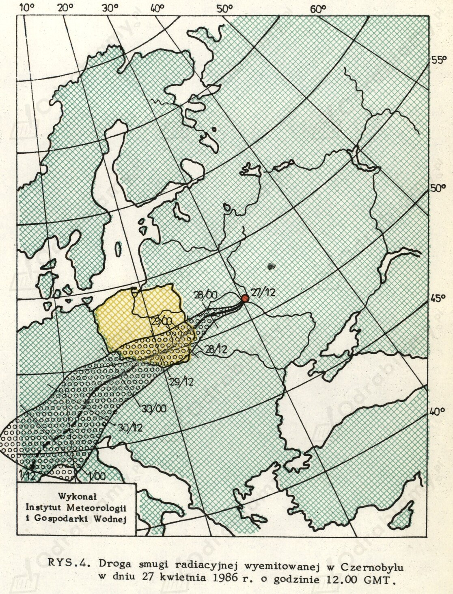

Katastrofa w Czarnobylu (26 kwietnia 1986 r.) w znaczący sposób wpłynęła na przemiany społeczno-polityczne w ZSRS. Najważniejsze zmiany to np.:
katastrofa pokazała, że partia manipuluje informacjami i ukrywała przed obywatelami, ale także opinią międzynarodową wydarzenia z Czarnobyla, co negatywnie odbiło się na zdrowiu milionów ludzi,
utajnienie informacji przez Moskwę doprowadziło do erozji zaufania do władz,
głasnost sprzyjała rozprzestrzenianiu informacji i plotek na temat katastrofy,
wydarzenia w Czarnobylu wzmacniały społeczne przekonanie, że dla władz ważniejszy od ludzkiego zdrowia i życia jest własny interes,
wybuch reaktora jeszcze bardziej obniżył katastrofalny stan kraju, a zwłaszcza instalacji atomowych,
Czarnobyl skompromitował sowiecki sektor atomowy i podważył autorytet czołowych uczonych,
zaniepokojenie stanem środowiska oraz troska o życie i zdrowie ludzkie stały się głośnymi hasłami ruchów niepodległościowych,
Ukraińcy w 1991 r. zagłosowali za secesją z ZSRR,
pod względem politycznym katastrofa czarnobylska przyczyniła się do upadku ZSRS w 1991 r.

Mapa przedstawiająca przemieszanie się chmury radioaktywnej wyemitowanej po katastrofie w elektrowni atomowej w Czarnobylu, stan na 27 kwietnia 1986 r., źródło zdjęcia: www. przystanekhistoria.pl
Działania podjęte przez administrację Reagana w stosunku do ZSRS:
dążenie do ograniczenia wpływów ZSRS na świecie,
twarda polityka wobec ZSRS,
nawiązanie współpracy politycznej z Wielką Brytanią i RFN,
rozpoczęcie wyścigu zbrojeń przez USA, co wynikało z posiadania przewagi technologicznej i dysponowania potężną gospodarką,
unowocześnienie amerykańskiej armii,
rozmieszczenie w Europie rakiet balistycznych - Pershing 2, Cruise,
militaryzacja przestrzeni kosmicznej (program gwiezdnych wojen) - pozbawienie ZSRS możliwości przeprowadzenia skutecznego ataku nuklearnego na USA i sprawie, że Sowieci staliby się bezbronni w przypadku wojny,
doprowadzenie do jeszcze większego osłabienia gospodarczego ZSRS poprzez:
- ograniczenie sprzedaży towarów i usług do państw bloku wschodniego,
- zmniejszenie przepływu nowych technologii,
- obniżenie cen surowców, ze sprzedaży których Sowieci czerpali znaczne zyski (nawiązanie przez USA współpracy gospodarczej z Arabią Saudyjską).
Wpływ polityki administracji Reagana na upadek bloku wschodniego:
Prezydentura Ronalda Reagana charakteryzowała się twardą polityką wobec ZSRS. Przejawiała się ona m.in. poprzez wyścig ekonomiczny i gospodarczy, który doprowadził do obniżenia cen ropy naftowej oraz nałożenia embarga na nowe technologie. Także ogłoszenie programu gwiezdnych wojen od 1983 r. oraz rozkręcenie wyścigu zbrojeń sprawiło, że Sowieci nie byli w stanie nadążyć w światowym współzawodnictwie z USA i ich sojusznikami. Co więcej, w Afganistanie USA wspierało mudżahedinów, m.in. poprzez dostawy broni, wysyłanie doradców i instruktorów. W innych częściach świata Amerykanie wspierali antykomunistyczne organizacje walczące z lokalnymi reżimami (np. Contras w Nikaragui czy "Solidarność" w Polsce). Stany Zjednoczone chciały doprowadzić do osłabienia ZSRS na wielu płaszczyznach, co w konsekwencji doprowadziło do stopniowego wyswobadzania się państw z zależności sowieckiej, a ostatecznie upadku bloku wschodniego.